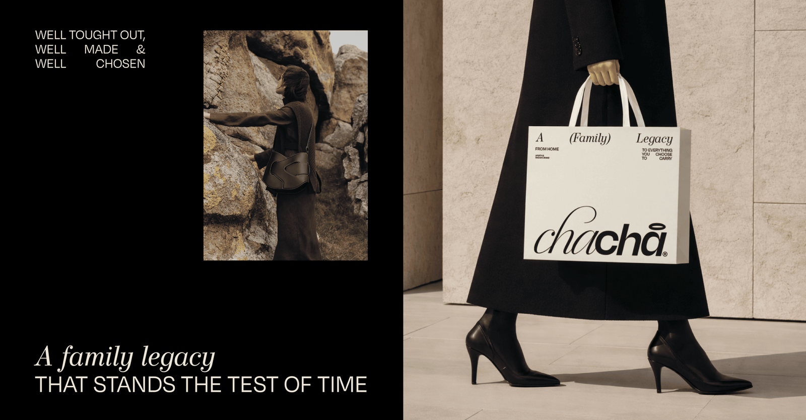

Vertical · retrato · alumni-kelly-rodriguez-retrato.jpg
Proyecto · alumni-kelly-rodriguez-proyecto.png

El aprendizaje más valioso que me dejó el IDC fue la organización como pilar del proceso creativo. Entendí que el diseño no avanza solo desde la investigación y la inspiración, sino que es un proceso riguroso de gestión y dedicación constante. Aprender a organizar conceptos, tiempos y recursos me permitió desarrollar esa capacidad multidisciplinaria que hoy aplico .
Kelly Rodríguez · Diseño Gráfico